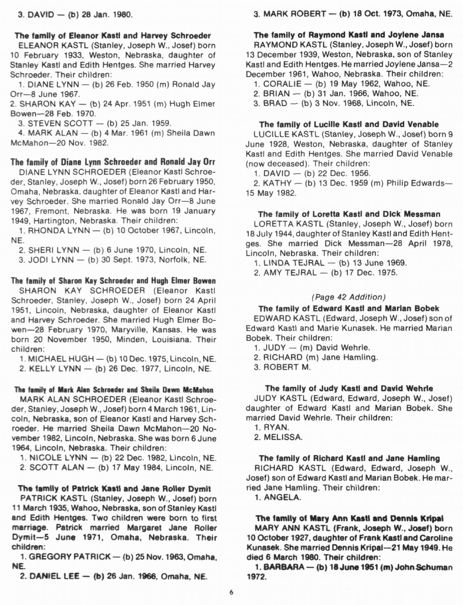

The book · Supplementary Section (1986)
Supplement page 6 The family of Eleanor Kastl and Harvey Schroeder


Transcription
- DAVID — (b) 28 Jan. 1980.
The family of Eleanor Kastl and Harvey Schroeder
ELEANOR KASTL (Stanley, Joseph W., Josef) born 10 February 1933, Weston, Nebraska, daughter of Stanley Kastl and Edith Hentges. She married Harvey Schroeder. Their children:
- DIANE LYNN — (b) 26 Feb. 1950 (m) Ronald Jay Orr—8 June 1967.
- SHARON KAY — (b) 24 Apr. 1951 (m) Hugh Elmer Bowen—28 Feb. 1970.
- STEVEN SCOTT — (b) 25 Jan. 1959.
- MARK ALAN — (b) 4 Mar. 1961 (m) Sheila Dawn McMahon—20 Nov. 1982.
The family of Diane Lynn Schroeder and Ronald Jay Orr
DIANE LYNN SCHROEDER (Eleanor Kastl Schroeder, Stanley, Joseph W., Josef) born 26 February 1950, Omaha, Nebraska, daughter of Eleanor Kastl and Harvey Schroeder. She married Ronald Jay Orr—8 June 1967, Fremont, Nebraska. He was born 19 January 1949, Hartington, Nebraska. Their children:
- RHONDA LYNN — (b) 10 October 1967, Lincoln, NE.
- SHERI LYNN — (b) 6 June 1970, Lincoln, NE.
- JODI LYNN — (b) 30 Sept. 1973, Norfolk, NE.
The family of Sharon Kay Schroeder and Hugh Elmer Bowen
SHARON KAY SCHROEDER (Eleanor Kastl Schroeder, Stanley, Joseph W., Josef) born 24 April 1951, Lincoln, Nebraska, daughter of Eleanor Kastl and Harvey Schroeder. She married Hugh Elmer Bowen—28 February 1970, Maryville, Kansas. He was born 20 November 1950, Minden, Louisiana. Their children:
- MICHAEL HUGH — (b) 10 Dec. 1975, Lincoln, NE.
- KELLY LYNN — (b) 26 Dec. 1977, Lincoln, NE.
The family of Mark Alan Schroeder and Sheila Dawn McMahon
MARK ALAN SCHROEDER (Eleanor Kastl Schroeder, Stanley, Joseph W., Josef) born 4 March 1961, Lincoln, Nebraska, son of Eleanor Kastl and Harvey Schroeder. He married Sheila Dawn McMahon—20 November 1982, Lincoln, Nebraska. She was born 6 June 1964, Lincoln, Nebraska. Their children:
- NICOLE LYNN — (b) 22 Dec. 1982, Lincoln, NE.
- SCOTT ALAN — (b) 17 May 1984, Lincoln, NE.
The family of Patrick Kastl and Jane Roller Dymit
PATRICK KASTL (Stanley, Joseph W., Josef) born 11 March 1935, Wahoo, Nebraska, son of Stanley Kastl and Edith Hentges. Two children were born to first marriage. Patrick married Margaret Jane Roller Dymit—5 June 1971, Omaha, Nebraska. Their children:
- GREGORY PATRICK — (b) 25 Nov. 1963, Omaha, NE.
- DANIEL LEE — (b) 26 Jan. 1966, Omaha, NE.
- MARK ROBERT — (b) 18 Oct. 1973, Omaha, NE.
The family of Raymond Kastl and Joylene Jansa
RAYMOND KASTL (Stanley, Joseph W., Josef) born 13 December 1939, Weston, Nebraska, son of Stanley Kastl and Edith Hentges. He married Joylene Jansa—2 December 1961, Wahoo, Nebraska. Their children:
- CORALIE — (b) 19 May 1962, Wahoo, NE.
- BRIAN — (b) 31 Jan. 1966, Wahoo, NE.
- BRAD — (b) 3 Nov. 1968, Lincoln, NE.
The family of Lucille Kastl and David Venable
LUCILLE KASTL (Stanley, Joseph W., Josef) born 9 June 1928, Weston, Nebraska, daughter of Stanley Kastl and Edith Hentges. She married David Venable (now deceased). Their children:
- DAVID — (b) 22 Dec. 1956.
- KATHY — (b) 13 Dec. 1959 (m) Philip Edwards—15 May 1982.
The family of Loretta Kastl and Dick Messman
LORETTA KASTL (Stanley, Joseph W., Josef) born 18 July 1944, daughter of Stanley Kastl and Edith Hentges. She married Dick Messman—28 April 1978, Lincoln, Nebraska. Their children:
- LINDA TEJRAL — (b) 13 June 1969.
- AMY TEJRAL — (b) 17 Dec. 1975.
(Page 42 Addition)
The family of Edward Kastl and Marian Bobek
EDWARD KASTL (Edward, Joseph W., Josef) son of Edward Kastl and Marie Kunasek. He married Marian Bobek. Their children:
- JUDY — (m) David Wehrle.
- RICHARD (m) Jane Hamling.
- ROBERT M.
The family of Judy Kastl and David Wehrle
JUDY KASTL (Edward, Edward, Joseph W., Josef) daughter of Edward Kastl and Marian Bobek. She married David Wehrle. Their children:
- RYAN.
- MELISSA.
The family of Richard Kastl and Jane Hamling
RICHARD KASTL (Edward, Edward, Joseph W., Josef) son of Edward Kastl and Marian Bobek. He married Jane Hamling. Their children:
- ANGELA.
The family of Mary Ann Kastl and Dennis Kripal
MARY ANN KASTL (Frank, Joseph W., Josef) born 10 October 1927, daughter of Frank Kastl and Caroline Kunasek. She married Dennis Kripal—21 May 1949. He died 6 March 1980. Their children:
- BARBARA — (b) 18 June 1951 (m) John Schuman 1972.
People from the line of descent on this page
- Lucille Kastl b. 1928
- Eleanor Kastl b. 1933
- Patrick Kastl b. 1935
- Raymond Kastl b. 1939
- Loretta Kastl b. 1944
- Mary Ann Kastl b. 1927
- Dennis Kripal d. 1980
- Barbara Kripal b. 1951
- Edward Kastl
- Judy Kastl
- Richard Kastl
- Robert M. Kastl
- Ryan Wehrle
- Melissa Wehrle
- Angela Kastl
- David Wilson b. 1980
- Diane Lynn Schroeder b. 1950
- Sharon Kay Schroeder b. 1951
- Steven Scott Schroeder b. 1959
- Mark Alan Schroeder b. 1961
- Ronald Jay Orr b. 1949
- Rhonda Lynn Orr b. 1967
- Sheri Lynn Orr b. 1970
- Jodi Lynn Orr b. 1973
- Hugh Elmer Bowen b. 1950
- Michael Hugh Bowen b. 1975
- Kelly Lynn Bowen b. 1977
- Sheila Dawn McMahon b. 1964
- Nicole Lynn Schroeder b. 1982
- Scott Alan Schroeder b. 1984
- Margaret Jane Roller Dymit
- Gregory Patrick Kastl b. 1963
- Daniel Lee Kastl b. 1966
- Mark Robert Kastl b. 1973
- Coralie Kastl b. 1962
- Brian Kastl b. 1966
- Brad Kastl b. 1968
- David Venable d. 1986
- David Venable b. 1956
- Kathy Venable b. 1959
- Linda Tejral b. 1969
- Amy Tejral b. 1975
Transcriber’s notes
Supplement page 6. Opens with '3. DAVID — (b) 28 Jan. 1980.', the third child of the Carole Burnett / Louis Wilson family from the previous page. The right column opens with '3. MARK ROBERT', the third child of the Patrick Kastl family that ends the left column. The Mary Ann Kastl / Dennis Kripal child list likely continues on the next page. Some passages (top lines, Patrick Kastl entry, Mary Ann Kastl entry) are printed in bolder type. Printed as-is: heading 'Jane Roller Dymit' vs text 'Margaret Jane Roller Dymit'; Loretta Kastl's children listed with surname TEJRAL.